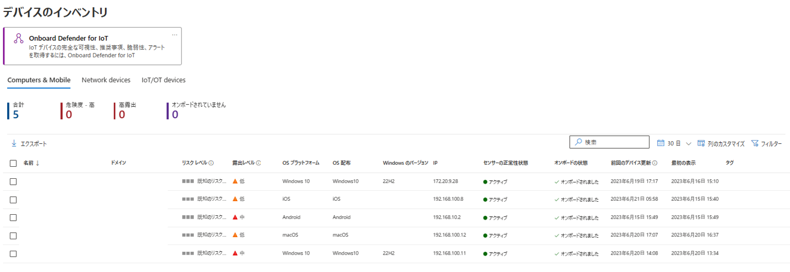
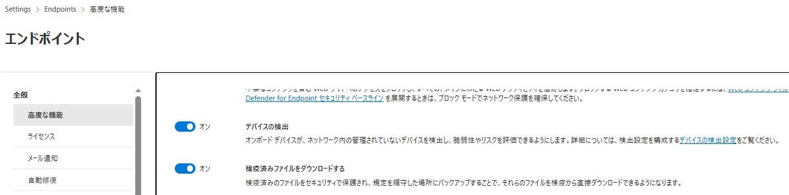
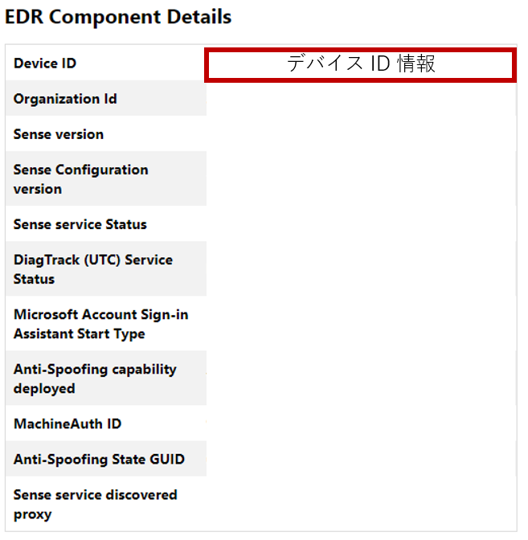
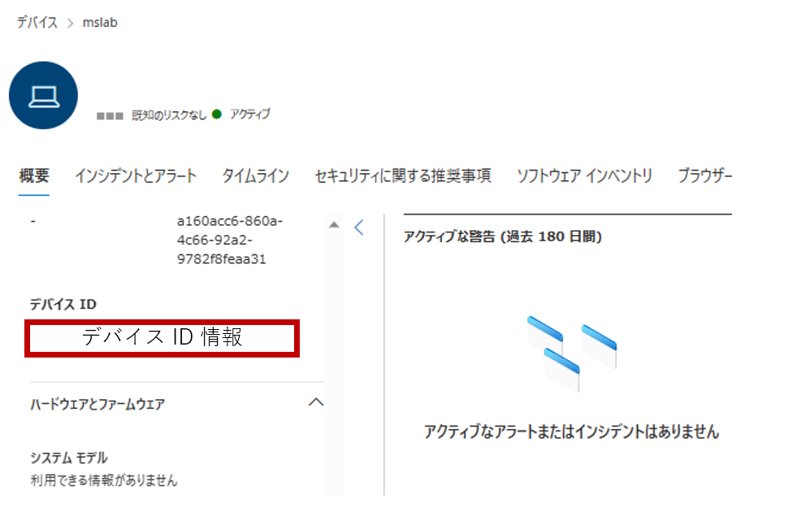

こんにちは Azure Security サポートチームです。
この記事では、Microsoft 365 Defender ポータル の「デバイスのインベントリ」に関するよくあるご質問についておまとめします。
※ 本記事の内容は 2023年 6月 21日時点の情報をものに作成しています。
本記事の内容
- デバイスのインベントリとは
- デバイスのインベントリに関するよくあるお問い合わせ
- オンボードしていない端末がデバイスのインベントリに登録されているのはなぜですか
- 同じ名前の端末がデバイスのインベントリに複数登録されているのはなぜですか
- 同じ名前のデバイスプロファイルが複数登録されてしまいましたが MDE にオンボードしている端末と紐づくデバイスプロファイルを特定することはできますか
- デバイスのインベントリ上で端末のオフボードが完了したどうか確認する方法はありますか
- デバイスのインベントリから端末の情報を削除することはできますか
- センサーの正常性列のステータスが アクティブ ではない場合どのような問題が発生していますか
- ユーザによってデバイスのインベントリに表示される情報が異なるのはなぜですか
- まとめ
デバイスのインベントリとは
Microsoft 365 Defender ポータルの「デバイスのインベントリ」は、Microsoft Defender for Endpoint(MDE) にオンボード(登録)された端末や、MDE の デバイス検出機能 によって識別されたネットワーク上の端末の情報(デバイスプロファイル)が一覧として表示されます。

※ 画像は 2023年 6月時点のものです
デバイスのインベントリの詳細に関する最新情報ついては、以下の公開情報の記載を参照してください。
デバイスのインベントリに関するよくあるお問い合わせ
オンボードしていない端末がデバイスのインベントリに登録されているのはなぜですか
テナントで MDE の デバイス検出機能 が有効化されている場合、「MDE にオンボードされた端末と同一ネットワーク上に存在する、MDE にオンボードされていない端末」の情報がデバイスのインベントリに登録される場合があります。
デバイス検出機能によって登録されたデバイスプロファイル(デバイス情報)の場合、「オンボード状態列」に「オンボードできます」や「サポートされていません」などが表示されます。
テナントでデバイス検出機能が有効化されているか否かについては、[設定]>[エンドポイント]>[高度な機能] より確認できます。
デバイス検出機能が有効化されている場合、以下のように [デバイスの検出] の設定がオンになります。

デバイス検出機能の詳細については、以下の公開情報を参照してください。
参考情報：デバイス検出の概要 | Microsoft Learn
なお、デバイス検出機能で検出されているデバイスは、MDE にはオンボードされていないため、MDE のセキュリティ保護機能は提供されません。
つまり、MDE にオンボードされており、保護が提供されているデバイスは「オンボード状態列」に「オンボードされました」と表示されているもののみが該当します。
同じ名前の端末がデバイスのインベントリに複数登録されているのはなぜですか
MDE では、オンボードされた端末を「デバイス ID」という一意の値で管理しています。
そのため、端末名が同じでも異なるデバイス ID が割り当てられている場合には、デバイスのインベントリに同じ名前のデバイスプロファイルが複数登録される状況が発生します。
例えば、以下のような操作を実施いただいた場合には、各端末のデバイス ID が更新され、デバイスインベントリ上でデバイスプロファイルが重複して作成される場合があります。
- 端末の所属するドメインを変更した場合
- 端末のコンピュータ名を変更した場合(※ 変更後の名前を持つデバイスプロファイルが新規に登録されます)
- 端末でクリーンインストールや、MDE オンボード前の状態にバックアップリストアを行った後に再オンボードした場合
端末でデバイス ID が更新された場合、その端末はデバイスのインベントリに新規に作成されたデバイスプロファイルを紐づき、情報の連携を行います。
ご利用端末が MDE に正常にオンボードされ、情報の連携を行っているか否かを確認したい場合は以下の公開情報の手順を利用できます。
参考情報：Microsoft Defender for Endpoint(MDE) にオンボードされたデバイスの正常性確認ポイント | Japan CSS Security Support Blog
同じ名前のデバイスプロファイルが複数登録されてしまいましたが MDE にオンボードしている端末と紐づくデバイスプロファイルを特定することはできますか
前述の通り、Microsoft 365 Defender ポータル上のデバイスプロファイルと MDE にオンボードされた端末は一意のデバイス ID 情報を用いて紐づけられており、情報連携を行っております。
そのため、MDE にオンボードした端末に割り当てられているデバイス ID 情報を調査することで、その端末と紐づくデバイスプロファイルの情報を特定することが可能です。
MDE にオンボードした端末に割り当てられているデバイス ID 情報は、クライアント アナライザー HTML レポートについて に記載の通り Client Analyzer ツールが出力する HTML レポートから確認できます。

Client Analyzer ツールの取得と実行方法については以下の公開情報をご参照ください。
参考情報：Run the client analyzer on Windows | Microsoft Learn
また、デバイスプロファイルと紐づくデバイス ID については、以下の通り各デバイスプロファイルをクリックした詳細画面内の [概要]>[デバイス ID] より確認できます。

デバイスのインベントリ上で端末のオフボードが完了したどうか確認する方法はありますか
端末が MDE からオフボードされると、端末内では MDE との情報連携が停止いたします。
そのため、MDE のサービス側では端末の状態を確認することができなくなるため、端末がオフボードされたか否かをデバイスのインベントリ上で明確に判断することはできません。
ただし、以上の通り MDE をオフボードすると端末と MDE 間の情報連携が停止されるため、デバイスのインベントリ上の「前回のデバイス更新」などの時刻が更新されなくなります。
また、下記公開情報にてご案内しております通り、端末がオフボードされ、MDE との情報連携が停止した場合には、7 日後にデバイスのインベントリ上の「センサーの正常性状態」列の情報が「アクティブ」から「非アクティブ」切り替わります。
参考情報：Microsoft Defender for Endpoint サービスのオフボード デバイス | Microsoft Learn
以上の通り、端末がオフボードされたか否かをデバイスのインベントリ上で明確に判断することはできませんが、「前回のデバイス更新」や「センサーの正常性状態」などの情報から、端末と MDE サービス間の情報連携の有無を確認することで、端末のオフボードに成功しているかどうかを判断することが可能です。
デバイスのインベントリから端末の情報を削除することはできますか
2023 年 6 月時点ではデバイスのインベントリから端末の情報(デバイスプロファイル)を手動で削除することはできません。
以下の公開情報に記載の通り、デバイスのインベントリ上に表示されるデバイスプロファイルは、端末からの情報連携が停止して「センサーの正常性状態」が「非アクティブ」になったのち、180 日以上経過すると自動的に削除されます。
参考情報：Microsoft Defender for Endpoint サービスのオフボード デバイス | Microsoft Learn
デバイスのインベントリ上でオフボード済みのデバイスなどの情報を非表示にしたい場合はフィルター機能を利用できます。
フィルター機能については以下の公開情報でご案内しております。
参考情報：フィルターを使用してデバイス インベントリ ビューをカスタマイズする | Microsoft Learn
センサーの正常性列のステータスが アクティブ ではない場合どのような問題が発生していますか
「センサーの正常性状態」列の情報が「非アクティブ」の場合、そのデバイスプロファイルと紐づくデバイス ID を割り当てられた端末から 7 日間以上情報が連携されていないことを示します。
これは、通常以下のような要因で発生します。
- 端末がオフボード済みで、MDE サービスとの情報連携を停止している場合
- すでに端末のデバイス ID が更新されており、新規作成されたデバイスプロファイルとの情報連携を実施している場合 (同じ名前の端末がデバイスのインベントリに複数登録されているのはなぜですか を参照してください)
- 通信の問題などにより、端末が 7 日間以上インターネット経由で MDE のサービスと接続していない場合
- 端末が 7 日間以上起動しておらず、MDE サービスとの情報連携を実施していない場合
また、「センサーの正常性状態」列の情報が「センサーデータなし」などの「アクティブ」以外のステータスである場合は、以下の公開情報に記載の通り端末が MDE の動作要件を満たしていないことや、MDE のサービスとの通信要件を満たしていない可能性が考えられます。
参考情報：Microsoft Defender for Endpointでデバイスの正常性を確認する | Microsoft Learn
MDE にオンボードした端末のステータスに問題が発生している場合は、以下の公開情報を参照するとともに、弊社サポート窓口までお問い合わせください。
参考情報：Microsoft Defender for Endpoint(MDE) にオンボードされたデバイスの正常性確認ポイント | Japan CSS Security Support Blog
ユーザによってデバイスのインベントリに表示される情報が異なるのはなぜですか
Microsoft 365 Defender ポータルでデバイスグループを作成して特定のユーザグループに割り当てを行っている場合、Microsoft 365 Defender ポータルにサインインするユーザによってデバイスのインベントリから参照できるデバイスプロファイルの種類や数が異なる場合があります。
MDE のデバイスグループについては以下の公開情報を参照してください。
参考情報：Microsoft Defender for Endpointでデバイス グループを作成および管理する | Microsoft Learn
まとめ
この記事では、Microsoft 365 Defender ポータルのデバイスのインベントリに表示される情報に関するよくあるご質問について紹介しました。
本記事の内容は執筆時点の情報を基にしておりますので、最新情報については公開情報をご確認ください。